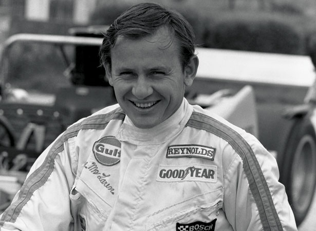
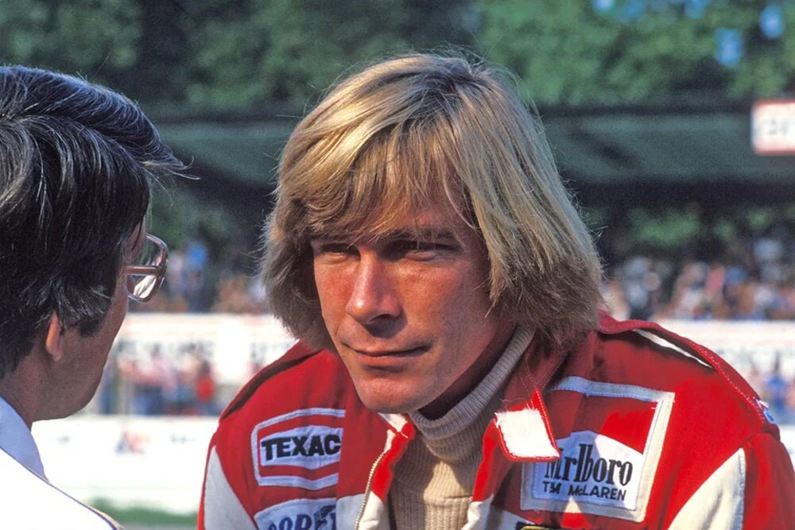
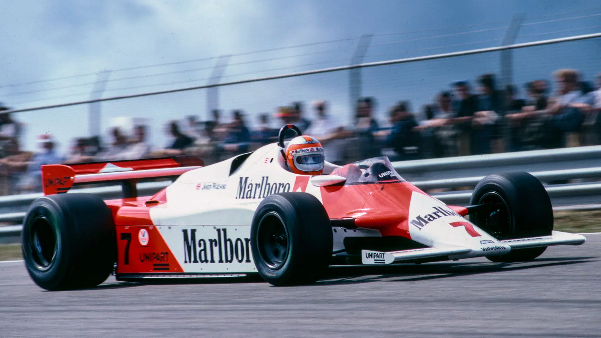
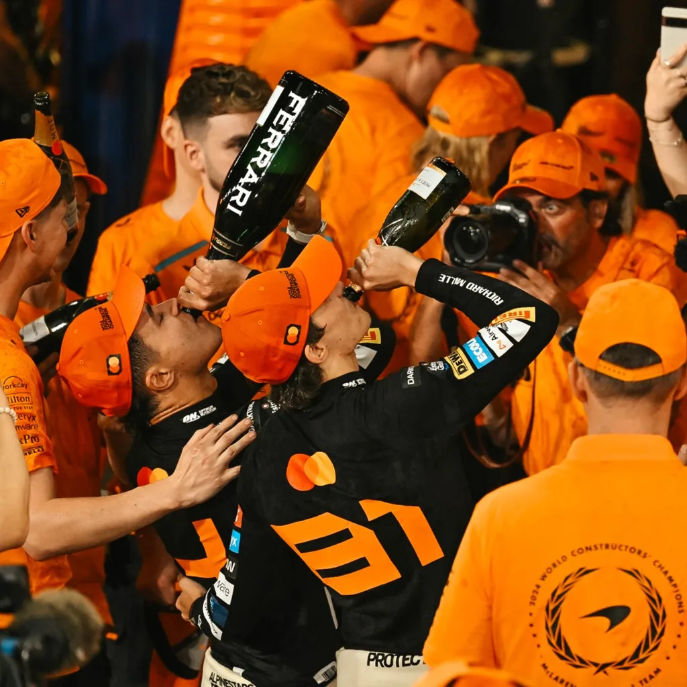

McLaren

The History of McLaren
McLaren is the second oldest team on the grid and they have quite a bit of history with successes, faliures and rivalries such as Senna and Prost or Alonso and Hamilton.
Bruce McLaren
Bruce McLaren was a New Zealand racing driver and automotive designer, engeineer ans motorsport executive who competed in Formula 1 from 1958 to 1970. He founded McLaren in 1963 whom he competed for from 1966 until his death in 1970.
Success in the 70s
McLaren finally won both championships in 1974 with Emmerson Fittipaldi and again in 1976 with James Hunt after a battle between him and Niki Lauda that was won by 1 point despite Lauda's near-fatal crash at the German Grand Prix.
M26-M29 'quite diabolical'
In the years after Hunt's victory the cars got worse and there were a lot of driver swaps. The 80s started muchas the 70s ended and under the pressure the team merged with Ron Dennis' Project Four Formula Two team. With the investment that came with the merger there was money to build a new car designed by John Barnard that used carbon-fibre instead of conventional aluminium alloy that became the McLaren MP4 (later MP4/1). This car driven by John Watson and Andrea de Cearis was back to wining races.
Senna/Prost era
In 1982 Lauda came out of retirement to drive alongside Watson but the latter was replaced by Alain Prost in 1984. McLaren won the constructors that year and the following and the drivers with Lauda in 1984 (by half a point to his teamate) and Prost the following 2 years. In 1988 Honda switched there supply to McLaren and they signed Ayrton Senna and in the MP4/4 they won both titles, the drivers going to Senna. They continued to win for the next 3 years, one title with Prost and 2 more with Senna before they were finally beaten by Williams.

2000s and 2010s
Just before the turn of the century Mika Hakkinen ended the drought of wins after 1991 and won the championship in 1998 and 1999 and claimed the constructors for McLaren with teamate David Coulthard. However the start of the century didn't go as well; it began with Michael Schumacher's domination at Ferrari, followed by infighting between Fernando Alonso and Lewis Hamilton and ending with Sebastian Vettel's domination into the 2010s. Then came the Honda engine followed by the Renault engine that left them at the back of the grid.

The Return to Mercedes Engines
Since 2021 McLaren have used Mercedes engines but it didn't bring them immediate success. For the first 2 years they has drivers Daniel Riccardo and Lando Norris and they achieved 1 race win with Riccardo before he was replaced by fellow Aussie Oscar Piastri. The beginning of 2023 was abismal with both cars being lapped once or twice each race but upgrades throughout the year helped them climb from last to forth in the standings and even allowing Piastri to win the Qatar sprint in his rookie season. 2024 didn't start great either but once again upgrades meant they were back to winning races; Norris' maiden win in Miami and Piastri's in Hungary. They totalled 6 wins which won them the constructors for the first time since 1998. This year they have been the most dominante from the start and have won 5 of the first 6 races.
